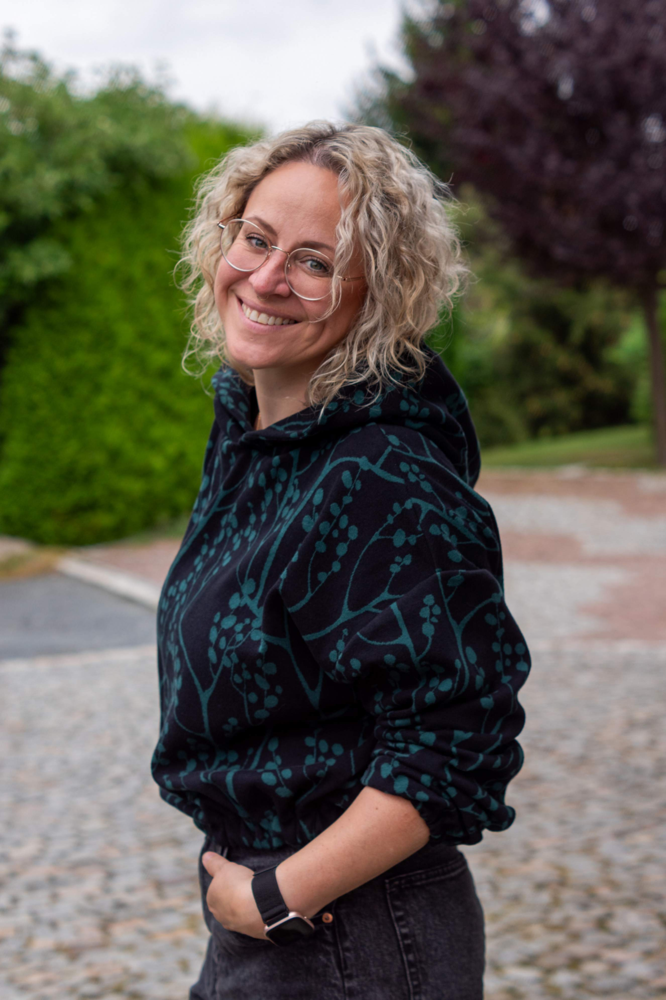

Wie alles begann – Meine Reise als Hobbynäherin
Es ist ein bisschen wie eine Reise, die ich nie geplant hatte, aber die sich auf wundersame Weise
entfaltet hat. Wenn ich heute an die Anfänge meines Nähens zurückdenke, kann ich kaum glauben, wie
viel sich in den letzten Jahren verändert hat. Alles begann, als mein erster Sohn auf die Welt kam.
In der Zeit, als die Kleinen noch winzig waren und jedes Mal, wenn sie aufwachten, die ganze Welt
ein wenig mehr strahlte. Damals entdeckte ich die wunderbare Welt des Selbermachens – genauer
gesagt, das Nähen.
Ich erinnere mich noch genau, wie ich zum ersten Mal eine kleine, selbstgenähte Jacke für ihn sah
und dachte: „Das kann ich auch!“ Ich war sofort fasziniert von der Idee, Kleidung für meine Kinder
zu nähen – mit eigenen Händen, mit Stoffen, die mir gefallen, und mit Schnittmustern, die sich ganz
nach den Bedürfnissen unserer Familie richten. Die ersten Teile waren, sagen wir mal, noch etwas
holprig, aber es gab mir dieses unbeschreibliche Gefühl der Erfüllung, zu sehen, wie aus einem Stück
Stoff etwas Tragbares entstand.
Mit der Zeit wuchsen meine Kinder, und ihre Vorlieben änderten sich. Irgendwann fanden sie selbst
genähte Kleidung nicht mehr so spannend – die neuesten Modetrends, das war nun viel wichtiger. Aber
das Nähen hatte sich in mein Herz eingebrannt. Ich konnte einfach nicht aufhören. Und so fing ich
an, für mich selbst zu nähen.
Zunächst waren es einfache Sachen – Bequeme Blusen, Röcke, Shirts, die ich im Alltag tragen konnte.
Doch ich wollte mehr. Ich wollte herausfinden, wie man wirklich funktionale und zugleich
wunderschöne Stücke erschaffen kann. Mein Augenmerk fiel bald auf Taschen – eine neue Leidenschaft
entdeckte ich für Rucksäcke. Es war ein völlig neues Terrain, das mich sowohl herausforderte als
auch unglaublich viel Freude bereitete. Wie viele Taschen habe ich inzwischen genäht? Ich kann es
kaum zählen!
Die nächste Stufe meiner Nähreise war dann die Liebe zu Softshellmänteln – warm, praktisch und
perfekt für die kälteren Monate. Ich verliebte mich in die Vielseitigkeit des Stoffes und die
Herausforderung, funktionale Kleidung zu nähen, die sich ebenso gut anfühlt wie sie aussieht. Diese
Entwicklung kam nicht über Nacht, aber sie fühlte sich richtig an. Es war ein natürlicher Schritt,
der sich aus meiner Liebe zur Handarbeit und dem Wunsch, immer neue Dinge zu lernen, ergab.
Heute kann ich mit Stolz sagen: Ich bin eine Hooynäherin. Ich nähe nicht nur für mich, sondern auch
für meine Familie und meine Freunde. Die Freude, die ich beim Nähen empfinde, und die vielen
Stunden, die ich mit Stoffen und Maschinen verbringe, sind zu einem Teil von mir geworden. Was als
kleines Hobby begann, hat sich zu einer Leidenschaft entwickelt, die ich mit anderen teilen möchte.
Genau darum führe ich diesen Blog – um meine Erfahrungen, Tipps und meine liebsten Nähprojekte mit
dir zu teilen. Und wer weiß, vielleicht inspirieren dich meine Geschichten dazu, ebenfalls selbst
die Nähnadel in die Hand zu nehmen!
Ich freue mich darauf, diese Reise mit dir zu teilen.
